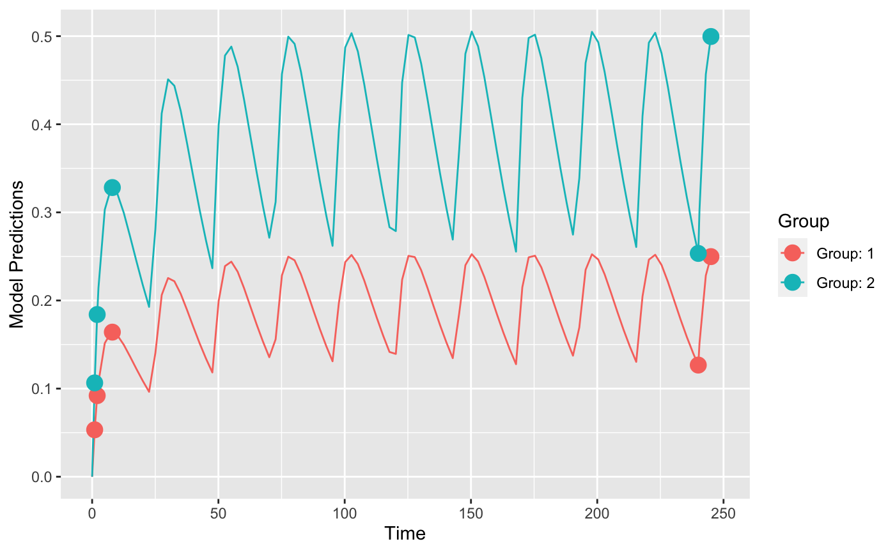

R/models.R
ff.PK.1.comp.oral.md.KE.RdThis is a structural model function that encodes a model that is
one-compartment, oral absorption, multiple bolus dose, parameterized using KE.
The function is suitable for input to the create.poped.database function using the
ff_file argument.
ff.PK.1.comp.oral.md.KE(model_switch, xt, parameters, poped.db)
| model_switch | a vector of values, the same size as |
|---|---|
| xt | a vector of independent variable values (often time). |
| parameters | A named list of parameter values. |
| poped.db | a poped database. This can be used to extract information that may be needed in the model file. |
A list consisting of:
y the values of the model at the specified points.
poped.db A (potentially modified) poped database.
Other models: feps.add.prop,
feps.add, feps.prop,
ff.PK.1.comp.oral.md.CL,
ff.PK.1.comp.oral.sd.CL,
ff.PK.1.comp.oral.sd.KE,
ff.PKPD.1.comp.oral.md.CL.imax,
ff.PKPD.1.comp.sd.CL.emax
Other structural_models: ff.PK.1.comp.oral.md.CL,
ff.PK.1.comp.oral.sd.CL,
ff.PK.1.comp.oral.sd.KE,
ff.PKPD.1.comp.oral.md.CL.imax,
ff.PKPD.1.comp.sd.CL.emax
library(PopED) ## find the parameters that are needed to define in the structural model ff.PK.1.comp.oral.md.KE#> function(model_switch,xt,parameters,poped.db){ #> ##-- Model: One comp first order absorption #> ## -- Analytic solution for both mutiple and single dosing #> with(as.list(parameters),{ #> y=xt #> N = floor(xt/TAU)+1 #> y=(DOSE*Favail/V)*(KA/(KA - KE)) * #> (exp(-KE * (xt - (N - 1) * TAU)) * (1 - exp(-N * KE * TAU))/(1 - exp(-KE * TAU)) - #> exp(-KA * (xt - (N - 1) * TAU)) * (1 - exp(-N * KA * TAU))/(1 - exp(-KA * TAU))) #> return(list( y=y,poped.db=poped.db)) #> }) #> } #> <environment: namespace:PopED>## -- parameter definition function ## -- names match parameters in function ff sfg <- function(x,a,bpop,b,bocc){ ## -- parameter definition function parameters=c( V=bpop[1]*exp(b[1]), KA=bpop[2]*exp(b[2]), KE=bpop[3]*exp(b[3]), Favail=bpop[4], DOSE=a[1], TAU=a[2]) return( parameters ) } ## -- Define design and design space poped.db <- create.poped.database(ff_fun=ff.PK.1.comp.oral.md.KE, fg_fun=sfg, fError_fun=feps.add.prop, groupsize=20, m=2, sigma=c(0.04,5e-6), bpop=c(V=72.8,KA=0.25,KE=3.75/72.8,Favail=0.9), d=c(V=0.09,KA=0.09,KE=0.25^2), notfixed_bpop=c(1,1,1,0), notfixed_sigma=c(0,0), xt=c( 1,2,8,240,245), minxt=c(0,0,0,240,240), maxxt=c(10,10,10,248,248), a=cbind(c(20,40),c(24,24)), bUseGrouped_xt=1, maxa=c(200,40), mina=c(0,2)) ## create plot of model without variability plot_model_prediction(poped.db)#> [,1] [,2] [,3] [,4] [,5] [,6] #> [1,] 0.06138421 -6.369454 34.30738 0.0000 0.0000 0.0000 #> [2,] -6.36945403 3667.860710 9887.52379 0.0000 0.0000 0.0000 #> [3,] 34.30737724 9887.523789 145132.13111 0.0000 0.0000 0.0000 #> [4,] 0.00000000 0.000000 0.00000 1322.9667 167.9800 206.8939 #> [5,] 0.00000000 0.000000 0.00000 167.9800 656.8986 202.6588 #> [6,] 0.00000000 0.000000 0.00000 206.8939 202.6588 1853.6889det(FIM)#> [1] 1.810534e+16#> bpop[1] bpop[2] bpop[3] D[1,1] D[2,2] D[3,3] #> 8.215338 10.090955 7.566975 31.220520 44.677836 38.005067